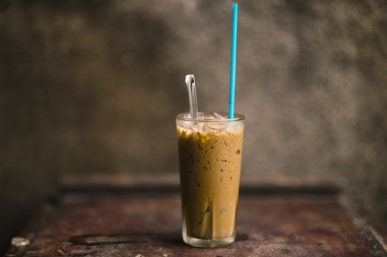
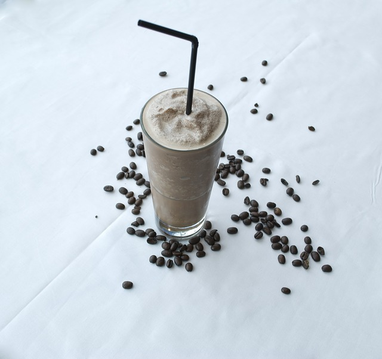
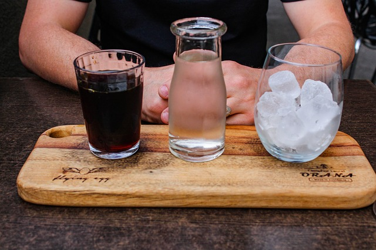

Ice Mocha
Süt ve çikolata ile yapılan, içimi oldukça yumuşak bir kahvedir.Aslında bir tür Latte dir, neticede ikisinin de içinde Espresso ve süt vardır.

Frappe
Hazır kahve'nin soğuk içilen bir çeşididir. En ideal yapım şekli; bir shakerin içine 1,5 su bardağı soğuk süt, 3-4 adet buz, 1,5 kaşık hazır kahve ve şeker damak tadiniza göre koyduktan sonra iyice çalkalanır. Ince uzun ve buzlu bir bardakta servisi uygundur.
Cold Brew
Kalın öğütülmüş kahve çekirdeklerinin, soğuk suyun içerisinde uzun bir süre bekletilerek demlenmesiyle elde edilen kahvedir. Yaklaşık 20 saatlik bir demlenme süresi vardır.
